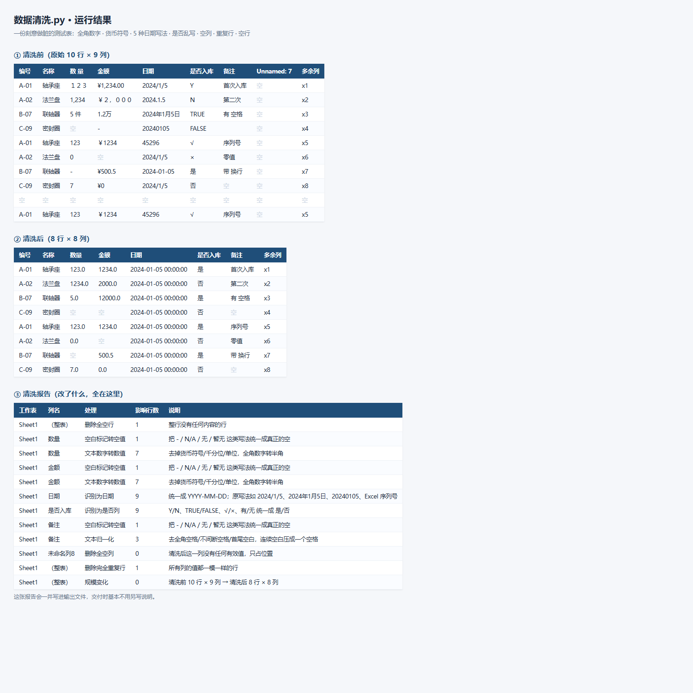
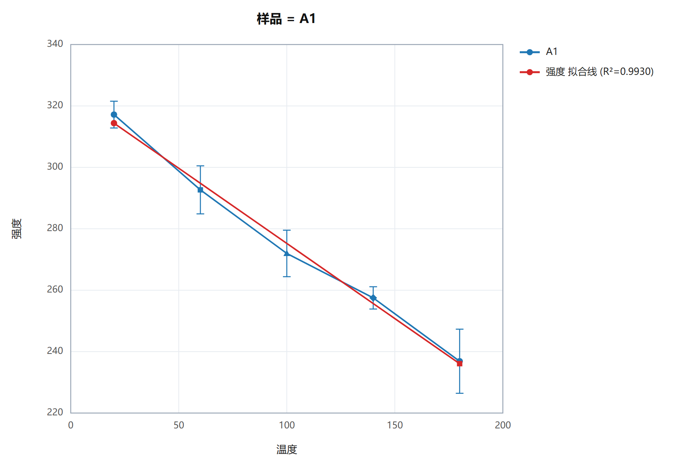
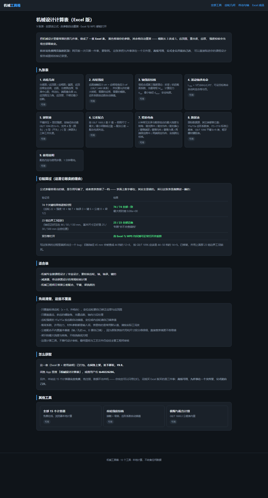
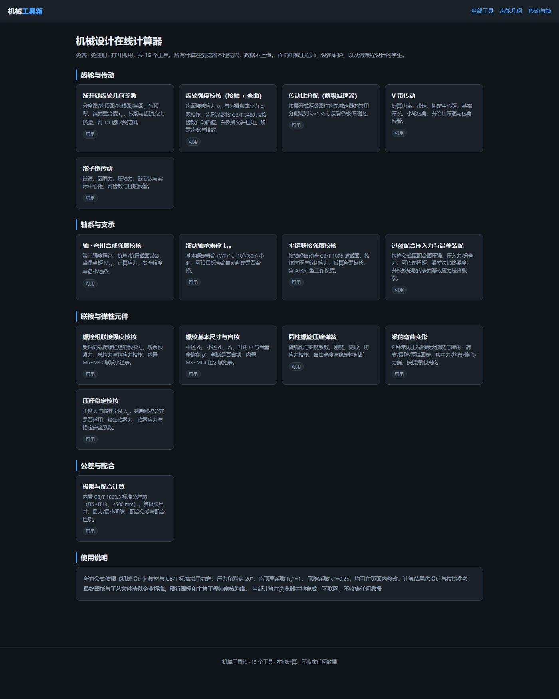

工程 / 科研 数据处理
Excel 自动化 · Python 脚本 · 数据提取 / 清洗 / 合并 / 出图 —— 机械与材料方向，本人接单，做 4 个完整工程项目
试验机导出的 PDF、谱图里的曲线、几十张格式不一的月度表、要统一排版的一批实验数据 —— 这些事手工做既慢又容易抄错。我把它们做成了七个脚本，一条流水线。
每一条都带真值可复现的测试，不是"看着差不多"。 下面每个能力配的都是本工具真实跑出来的截图，不是示意图 —— 点开可以看大图。
把你的文件发我（脱敏也行），我先跑一遍告诉你：这份数据干不干净、能不能直接合并、 有哪几列需要人工处理、自动化大概能省多少时间。报告给你，不收钱，可以拿去比价。 如果数据量不大、手工做更快，我会直接告诉你不用买脚本。
七件事，每一件都有跑通的成品
③公开网页表格采集
把公开页面上的表格抓成 Excel，不需要装 requests，也不需要 BeautifulSoup。 合并单元格、两层表头、GBK 编码、一页多表、分页都处理；每一行都带来源网址与表内行号，方便回去核对。
网页源码里是这样（rowspan 合并的厂区）
<tr><th rowspan="2">车间</th> <th colspan="2">产量</th></tr> <tr><th>一月</th><th>二月</th></tr>
抓出来是这样（父级信息不丢）
车间 | 产量_一月 | 产量_二月 | 备注 一号 | 10 | 20 | 正常 一号 | 11 | 21 | 二号 | 30 | 40 | 检修
④不规范数据清洗成规范表
全角数字、¥1,234.00、5 件、1.2万、
五种日期写法、八种"是/否"写法、前后空白、空行空列、完全重复行、列名 `Unnamed: 7` —— 一次性统一掉，
并给出一份逐列说明改了什么的清洗报告。

⑥实验数据批量出图
一组数据出十几张图还要统一格式，是最耗人的活。一次批量出 SVG（矢量，直接进论文）+ PNG，可带误差棒、线性拟合与 R²， 同时生成一份带原生 Excel 图表的 `图表.xlsx` 和一个能翻看的图库页。 不需要 matplotlib。

⑦机械设计计算与校核
齿轮几何与强度（GB/T 3480）、轴弯扭合成、滚动轴承寿命、平键联接、 公差配合（GB/T 1800.3）、梁的弯曲挠度。本站 15 个计算器可以先免费试， 要能离线、能自己改公式的版本是那份 Excel 成品。

你付钱之后拿到的是这些
① 可运行的 Python 源码 —— 不是截图、不是加密脚本。文件名、参数、注释都写清楚，你或你同事以后能自己改。
② 一份《使用说明》 —— 怎么装、怎么跑、每个参数什么意思、输出是什么、已知不能做什么。中文，按你的实际数据写。
③ 远程指导一次 —— 环境装不上、参数不会填，我陪你跑通为止。远程或截图都行。
④ 3 天内免费修 bug —— 同一份数据在我这儿跑出来的结果和你的不一致，算我的问题，我改。
先免费试，不用先跟我聊
本站 15 个计算器完全免费、免注册、数据不出浏览器。 你可以先拿去用，用它判断我做的东西靠不靠谱 —— 用完了再决定要不要找我干活。

报价区间
| 类型 | 参考价（元） | 典型需求 |
|---|---|---|
| 简单单文件处理 | 20 ~ 50 | 一次清洗、一次合并、出一组图 |
| 中等（多文件 / 多步骤） | 80 ~ 200 | PDF 批量提取 + 清洗 + 汇总 |
| 复杂（要定制逻辑） | 300 ~ 800 | 要跑通你单位的固定报表流程 |
| 只配环境 / 远程排错 | 20 ~ 40 | Anaconda、PyCharm、依赖装不上 |
报了价再开工，中途不加价。先聊需求、带上样例文件，我评估后给报价和工期。
先说清楚，这些我不接
· 毕业设计 / 课程设计代做（学术造假，一律不接）
· 需要爬取隐私数据、破解类需求
· 需要我提供身份资质证明的
· 要登录、有验证码、纯 JS 动态渲染的网站 —— 抓不了，我会直接说抓不了
· 面向的站点 robots.txt 明确禁止抓取的，默认不会去抓（你可以让我加参数强制，但请自行确认你有权采集）
· 不做图像增强、不做 OCR 识别扫描件文字（扫描件请先自己做 OCR，我不猜图片内容）
怎么找到我
在闲鱼 App 里搜 「Excel数据处理 数据提取」，或搜用户名 tb40226286。 拍下前先聊需求都行。
另外这里有一点需要说明：数据处理的活儿大多是本地跑的，你的文件我不会外传， 也不上传到任何服务器。需要联网的只有"公开网页表格采集"这一项。